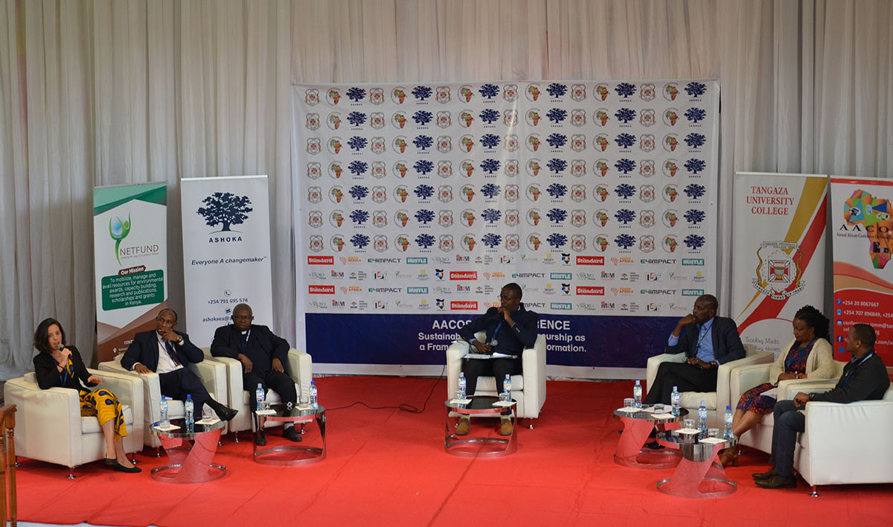

About the Conference Annual Africa Conference on Social Entrepreneurship (AACOSE)
The Annual Africa Conference on Social Entrepreneurship (AACOSE) is an initiative set in place to foster the interaction between the key actors who contribute to creating favourable conditions for the growth of sustainable social enterprises in Africa Learn More

Meet our Conference Speakers
Pape Samb
Ashoka Global Vice President & Executive Director for Africa
Pape Samb
Ashoka Global Vice President & Executive Director for Africa
Pape has twenty years of leadership experience, with an established record of strategic planning, youth and women entrepreneurship, program development and management, content management, fundraising, training and facilitation. His main role at Ashka is to create the social demand for a new framework that fosters changemaking mindsets in the people and communities in Africa, and address the continental challenges through fellows’ engagement, co-creation with companies, youth venture, and empathy.